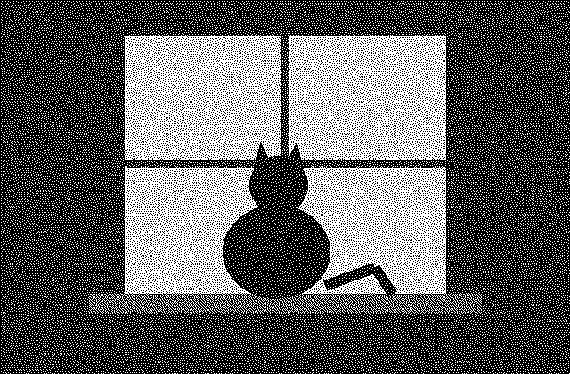
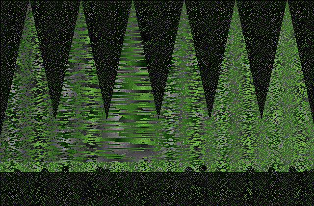
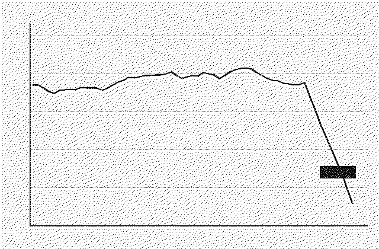
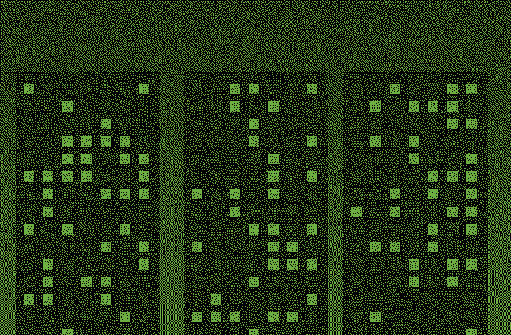
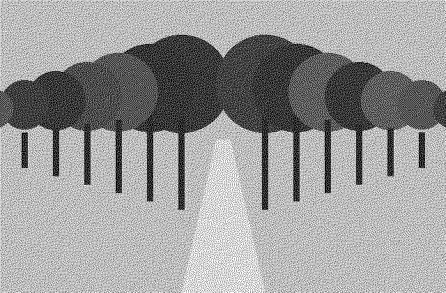
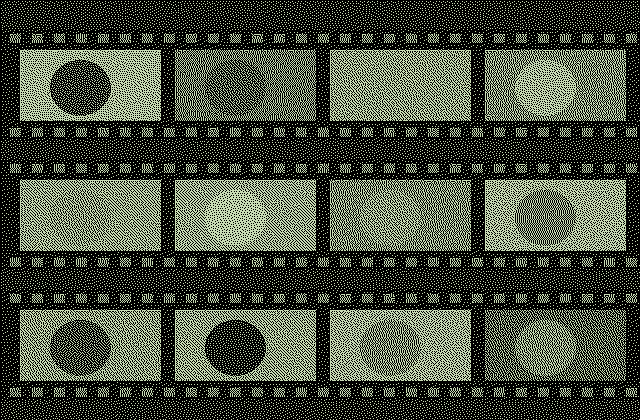

K
-
1
64 K
-
2
Prečo sa mestské stromy oplatia viac ako klimatizácia
Pred rokom som začala zbierať štúdie o tom, čo robia stromy s teplotou v meste. Väčšina hovorí to isté: vzrastlý strom ochladí okolie o dva až štyri stupne a v uliciach, kde sa ľudia pohybujú, to robí väčší rozdiel než akákoľvek klimatizácia. Viedeň, Barcelona a Rotterdam to merali každá inak, ale výsledok je podobný. Prečo to radnice aj tak počítajú zle? Lebo strom je v rozpočte zelene, ale úspora je v zdravotníctve a v účtoch za elektrinu, a nikto neporovnáva tie dve tabuľky naraz.
58 K -
3
mačka na parapete, Štrkovec

Susedova. Sedí tam každý večer o siedmej, presne keď sa rozsvieti lampa.
51 K -
4
session: fotky zo zvukovej skúšky

Generálka v piatok večer. Svetlá sú hotové, šatňa ešte nie.
47 K -
5
Re[4]: čo počúvate dnes
youtube.com :: 7:42Live session z malého klubu v Brne, zvuk je lepší než na albume. Od 3:10 to začne.
44 K -
6
Re[12]: rozpočet na budúci rok
Kto čakal, že sa bude škrtať na kultúre a nie na tendroch, ten tu asi nežije dlho.
41 K -
7
denne aktívni za tri mesiace

Graf z logov. Tá diera vpravo je víkend, keď padol server. Zvyšok je pekne stabilný.
38 K -
8
„za účelom“ musí zomrieť
Zbierka najhorších úradných fráz za tento týždeň. Víťaz: „v rámci zabezpečenia realizácie“, tesne za ním „predmetná vec“ a „z dôvodu toho, že“. Každý piatok vyberieme jednu a preložíme ju do ľudskej reči. Pravidlá: bez mien, bez fotiek úradníkov, a ak frázu nájdete vo vlastnom texte, priznajte sa. Ja začínam: minulý mesiac som napísal „v nadväznosti na uvedené“ a dodnes sa hanbím.
33 K -
9
Petržalka v hmle

Panelové domy v hmle vyzerajú ako lode. Fotila som len okná, v ktorých sa svieti.
31 K -
10
aleja pri Dunaji, Portra 400

Platany pri Dunaji v októbri. Jedno políčko, žiadna úprava.
27 K -
11
dokument: ako sa robí vinyl
vimeo.com :: 24:10Lisovňa v Lodenici, od laku po obal. Dvadsať minút, ktoré vás naučia mať radšej platne.
25 K -
12
Re[7]: X230 v roku 2026
Displej je zlý, váha je zlá. Tá klávesnica to vyváži.
24 K -
13
prečo stále analóg
Lebo každé políčko niečo stojí. Lebo nevidím výsledok hneď. Lebo keď sa film vráti z labu, je to ako list od seba samej spred dvoch týždňov. Digitál mi dal tisíc fotiek z výletu a žiadnu som si nepozrela dvakrát. Z filmu mám tridsaťšesť a poznám každú. Neviem, či je to lepšie. Viem, že je to moje.
22 K -
14
prvý film z novej Nikon FM2

Prvých 36 políčok: tri ostré, päť krivých, zvyšok sú moje topánky. Je to láska.
18 K -
15
Self-hosting v roku 2026: čo nám beží doma
Starý Thinkpad pod posteľou, Nextcloud, Jellyfin, Pi-hole a záložný disk, ktorý som raz za rok zabudol pripojiť. Žerie to 11 W, beží to päť rokov a jediný výpadok bol, keď mačka vytiahla kábel. Čo by som urobil inak: zálohy automaticky od prvého dňa, nie od prvej straty dát.
15 K